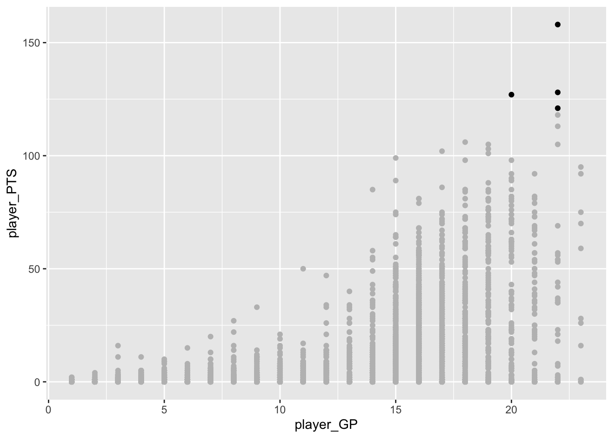
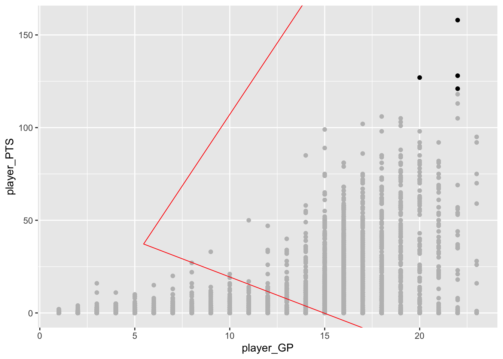
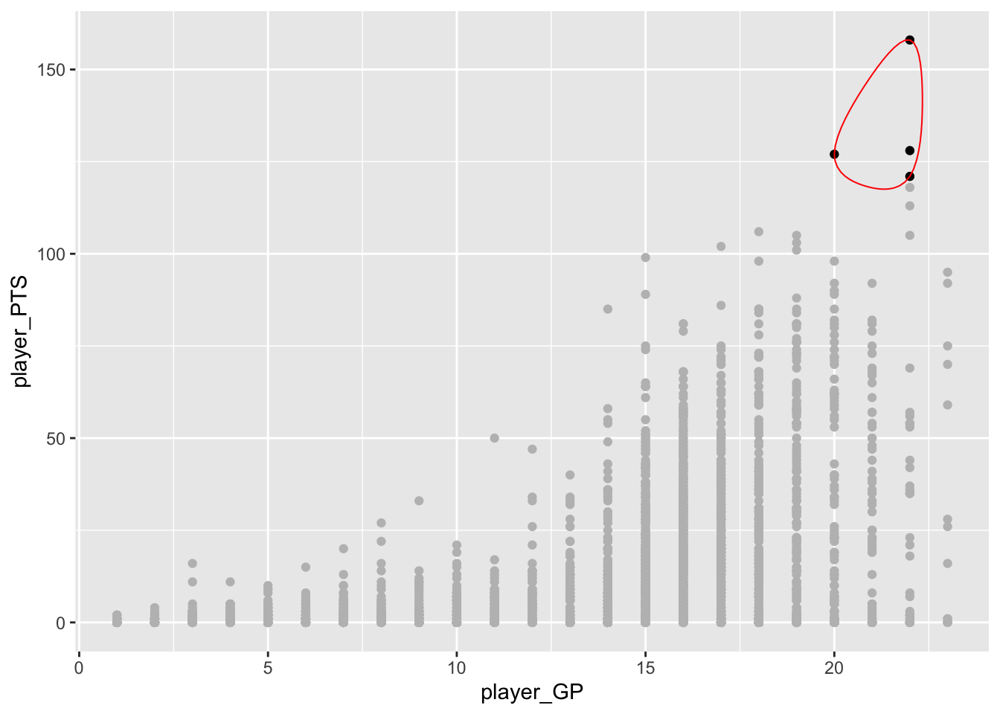
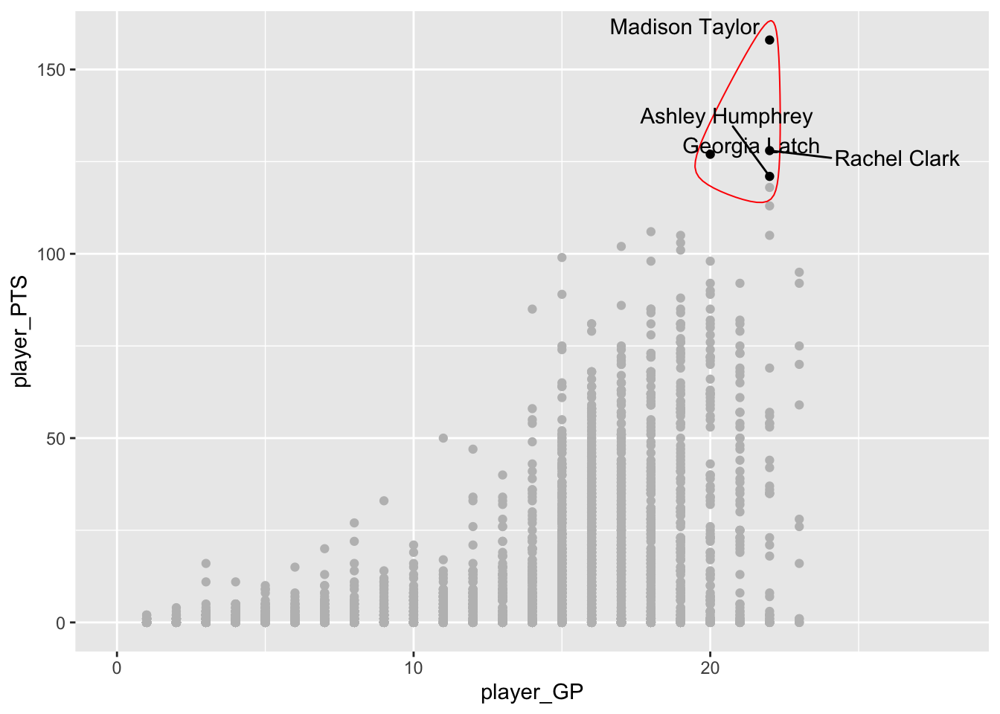
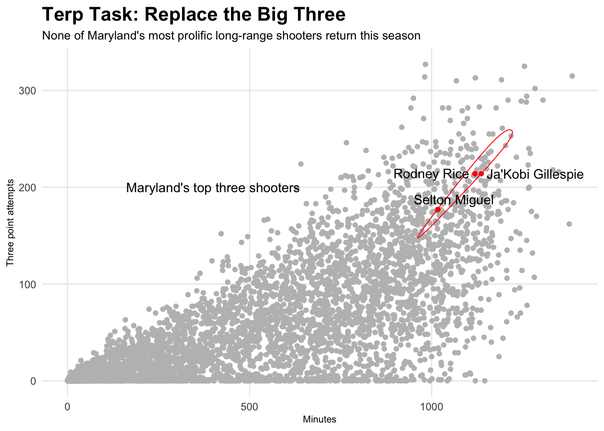

library(tidyverse)
library(ggalt)29 Encircling points on a scatterplot
One thing we’ve talked about all semester is drawing attention to the thing you want to draw attention to. We’ve used color and labels to do that so far. Let’s add another layer to it – a shape around the points you want to highlight.
Remember: The point of all of this is to draw the eye to what you are trying to show your reader. You want people to see the story you are trying to tell.
It’s not hard to draw a shape in ggplot – it is a challenge to put it in the right place. But, there is a library to the rescue that makes this super easy – ggalt.
Install it in the console with install.packages("ggalt")
There’s a bunch of things that ggalt does, but one of the most useful for us is the function encircle. Let’s dive in.
Let’s say we want to highlight the top scorers in women’s college basketball. So let’s use our player data.
For this walkthrough:
And while we’re loading it, let’s filter out anyone who hasn’t played.
players <- read_csv("https://raw.githubusercontent.com/dwillis/hhs-snapshots/main/data/player_totals_20230417.csv") |> filter(mp > 0)Rows: 15321 Columns: 182
── Column specification ────────────────────────────────────────────────────────
Delimiter: ","
chr (5): full_name, hhs_player_id_text, rollup, source, hhs_player_id
dbl (176): win, loss, gp, gs, ga, win_pct, mp, sec, sec_total, pts, fgm, fga...
lgl (1): opp_ppsa
ℹ Use `spec()` to retrieve the full column specification for this data.
ℹ Specify the column types or set `show_col_types = FALSE` to quiet this message.We’ve done this before, but let’s make a standard scatterplot of minutes and points.
ggplot() + geom_point(data=players, aes(x=mp, y=pts))So we can see right away that there are some dots at the very top that we’d want to highlight. Who are these scoring machines?
Like we have done in the past, let’s make a dataframe of top scorers. We’ll set the cutoff at 700 points in a season.
topscorers <- players |> filter(pts > 700)And like we’ve done in the past, we can add it to the chart with another geom_point. We’ll make all the players grey, we’ll make all the top scorers black.
ggplot() +
geom_point(data=players, aes(x=mp, y=pts), color="grey") +
geom_point(data=topscorers, aes(x=mp, y=pts), color="black")
And like that, we’re on the path to something publishable. We’ll need to label those dots with ggrepel and we’ll need to drop the default grey and add some headlines and all that. And, for the most part, we’ve got a solid chart.
But what if we could really draw the eye to those players. Let’s draw a circle around them. In ggalt, there is a new geom called geom_encircle, which … does what you think it does. It encircles all the dots in a dataset.
So let’s add geom_encircle and we’ll just copy the data and the aes from our topscorers geom_point. Then, we need to give the encirclement a shape using s_shape – which is a number between 0 and 1 – and then how far away from the dots to draw the circle using expand, which is another number between 0 and 1.
Let’s start with s_shape 1 and expand 1.
ggplot() +
geom_point(data=players, aes(x=mp, y=pts), color="grey") +
geom_point(data=topscorers, aes(x=mp, y=pts), color="black") +
geom_encircle(data=topscorers, aes(x=mp, y=pts), s_shape=1, expand=1, colour="red")
Whoa. That’s … not good.
Let’s go the opposite direction.
ggplot() +
geom_point(data=players, aes(x=mp, y=pts), color="grey") +
geom_point(data=topscorers, aes(x=mp, y=pts), color="black") +
geom_encircle(data=topscorers, aes(x=mp, y=pts), s_shape=0, expand=0, colour="red")
Better, but … the circle cuts through multiple dots.
This takes a little bit of finessing, but a shape of .5 means the line will have some bend to it – it’ll look more like someone circled it with a pen. Then, the expand is better if you use hundredths instead of tenths. So .01 instead of .1. Here’s mine after fiddling with it for a bit, and I’ll add in player names as a label.
ggplot() +
geom_point(data=players, aes(x=mp, y=pts), color="grey") +
geom_point(data=topscorers, aes(x=mp, y=pts), color="black") +
geom_text(data=topscorers, aes(x=mp, y=pts, label=full_name), hjust = 0, vjust=1) +
geom_encircle(data=topscorers, aes(x=mp, y=pts), s_shape=.5, expand=.03, colour="red")
Now let’s clean this up and make it presentable. If you look at the top scorers, four were Wooden Award finalists. So here’s what a chart telling that story might look like.
ggplot() +
geom_point(data=players, aes(x=mp, y=pts), color="grey") +
geom_point(data=topscorers, aes(x=mp, y=pts), color="black") +
geom_encircle(data=topscorers, aes(x=mp, y=pts), s_shape=.5, expand=.03, colour="red") +
geom_text(aes(x=750, y=800, label="Top scorers")) +
labs(title="Top scorers are Wooden Award candidates", subtitle="Big scorers Maddy Siegrist, Caitlin Clark, Angel Reese and Aneesah Morrow among 15 finalists", x="Minutes", y="Points") +
theme_minimal() +
theme(
plot.title = element_text(size = 16, face = "bold"),
axis.title = element_text(size = 8),
plot.subtitle = element_text(size=10),
panel.grid.minor = element_blank()
)
29.1 A different, more local example
You can use circling outside of the top of something. It’s a bit obvious that the previous dots were top scorers. What about when they aren’t at the top?
Works the same way – use layering and color smartly and tell the story with all your tools.
Let’s grab the top three point attempt takers on the 2022-23 Maryland roster. As of now, only one will be coming back.
players23 <- read_csv("data/players23.csv")Rows: 5681 Columns: 59
── Column specification ────────────────────────────────────────────────────────
Delimiter: ","
chr (10): Team, Player, Class, Pos, Height, Hometown, High School, Summary, ...
dbl (49): #, Weight, Rk.x, G, GS, MP, FG, FGA, FG%, 2P, 2PA, 2P%, 3P, 3PA, 3...
ℹ Use `spec()` to retrieve the full column specification for this data.
ℹ Specify the column types or set `show_col_types = FALSE` to quiet this message.mdtop <- players23 |> filter(Team == "Maryland Terrapins") |> top_n(3, `3PA`)And just like above, we can plug in our players geom, our mdtop dataframe into another geom, then encircle that dataframe. Slap some headlines and annotations on it and here’s what we get:
ggplot() + geom_point(data=players23, aes(x=MP, y=`3PA`), color="grey") + geom_point(data=mdtop, aes(x=MP, y=`3PA`), color="red") + geom_encircle(data=mdtop, aes(x=MP, y=`3PA`), s_shape=.02, expand=.18, colour="red") +
geom_text(aes(x=400, y=200, label="Maryland's top three shooters")) +
labs(title="The Big Three?", subtitle="Maryland's top three point shooters not among the leaders in college basketball ", x="Minutes", y="Three point attempts") +
theme_minimal() +
theme(
plot.title = element_text(size = 16, face = "bold"),
axis.title = element_text(size = 8),
plot.subtitle = element_text(size=10),
panel.grid.minor = element_blank()
)Warning: Removed 578 rows containing missing values (`geom_point()`).
From the top, Maryland’s dots are Donald Carey, Donta Scott and Jahmir Young. The last two return this season.